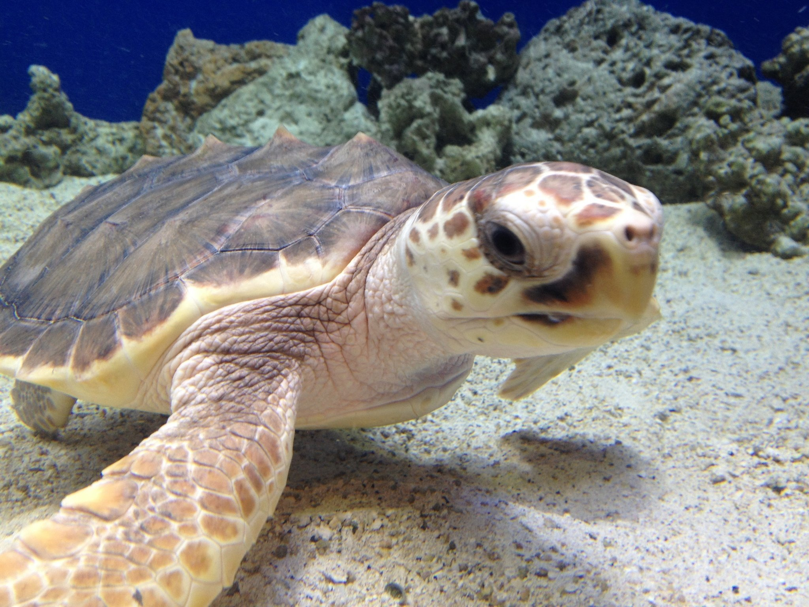
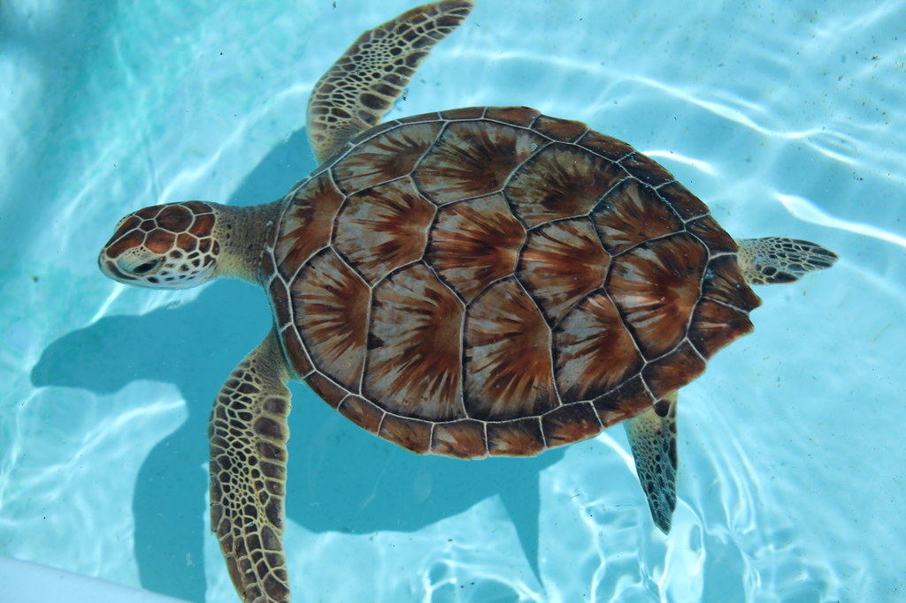
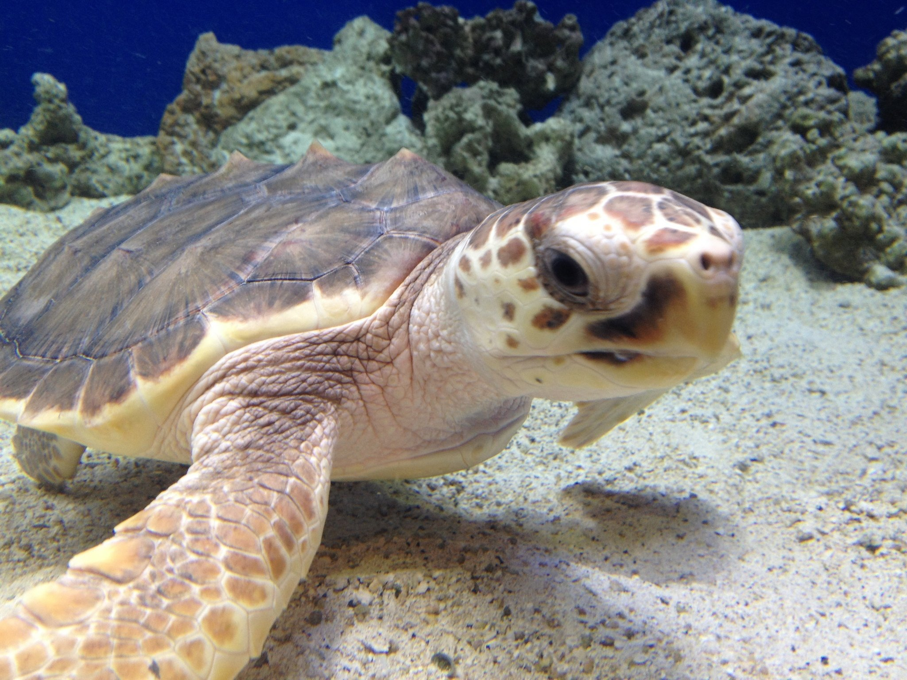
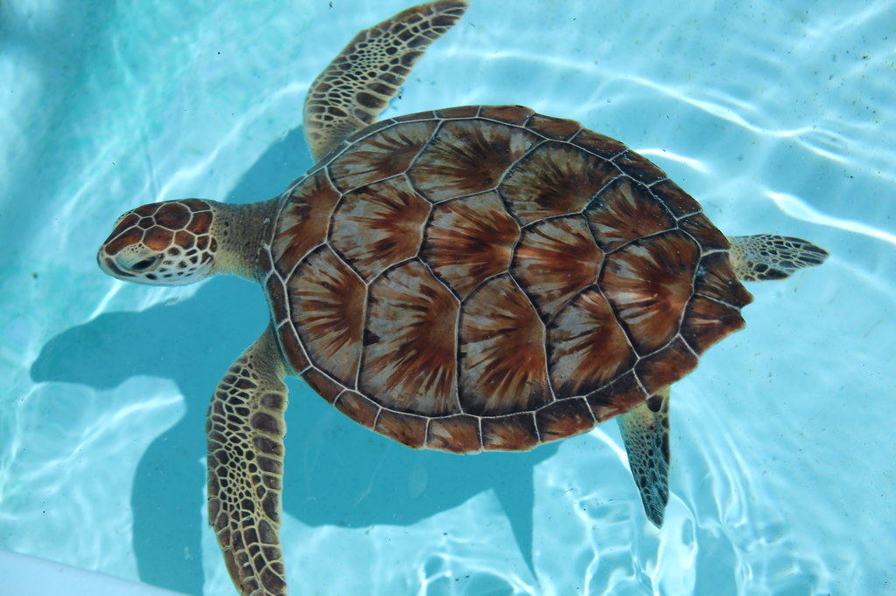
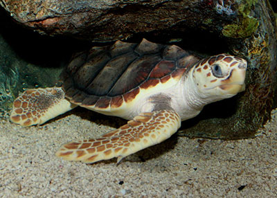
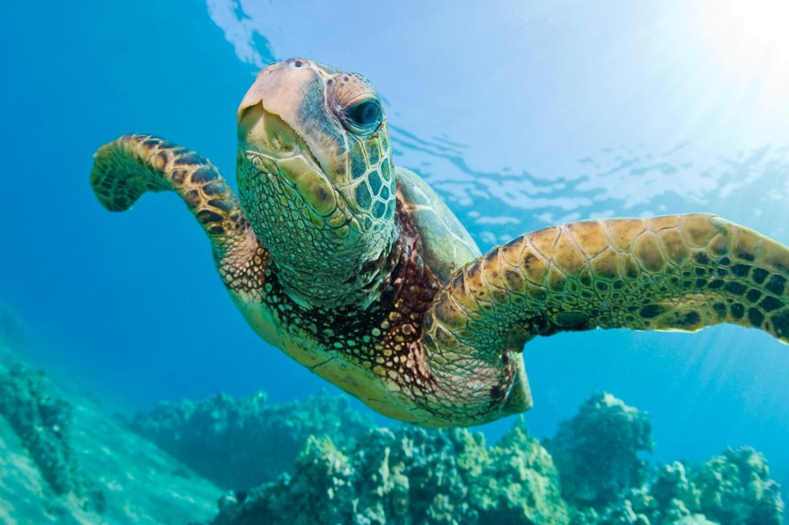
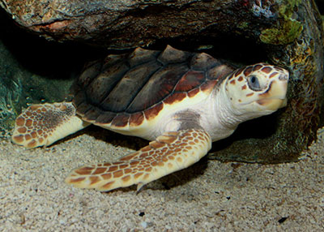
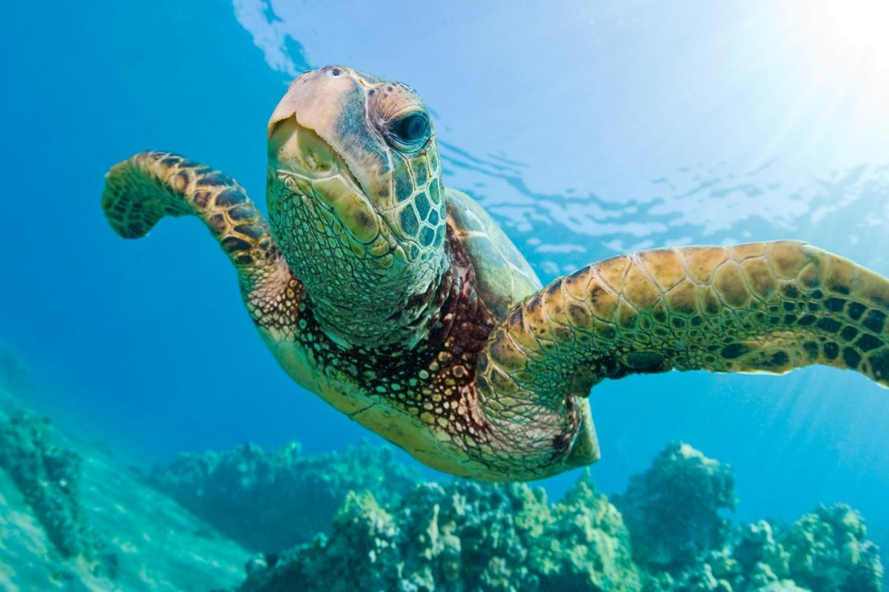

Loggerhead Sea Turtle
Loggerhead turtles get their name from their enormous heads, which house powerful jaw muscles that allow them to crush hard-shelled prey like clams and sea urchins. In comparison to other sea turtles, they are less likely to be hunted for their meat or shell. Because loggerhead turtles commonly come into touch with fisheries, bycatch, or the unintended capture of marine animals in fishing gear, is a severe concern.
| Kingdom | Animalia |
|---|---|
| Phylum | Chordata |
| Class | Reptilia |
| Order | Testudines |
| Family | Cheloniidae |
| Genus | Caretta |
| Species | caretta |
Appearence
The heads of loggerhead turtles are large, with powerful jaws. In adults and subadults, the top shell (carapace) is slightly heart-shaped and reddish-brown, while the bottom shell (plastron) is often a pale yellowish color. The top of the neck and flippers are normally dull brown to reddish brown, with medium to pale yellow sides and bottom. Sea turtles, unlike freshwater turtles and tortoises, cannot retract their heads or flippers into their shells. Hatchlings are mainly dark brown, with white to white-gray borders on their flippers and a yellowish-to-tanto tan bottom shell.
Behaviour and Diet
Loggerhead turtles, like all sea turtles, are marine reptiles that must surface for air. Adult female sea turtles return to shore to lay their eggs in the sand—they are exceptional navigators and typically return to the same beach where they hatched decades before. From hatchling to adult, loggerhead turtles go through a variety of developmental stages. Hatchlings and juveniles spend their first 7 to 15 years of life in open water. They will then relocate to nearshore coastal habitats where they will graze and grow for several years. Adult loggerhead turtles travel hundreds of kilometers from their feeding sites to their breeding beaches.
Loggerheads are carnivores who only eat plants on occasion. They eat on a wide variety of floating things during their open ocean period. Unfortunately, people' waste and other detritus tend to accumulate in their habitat. Turtles frequently mistake small pieces of plastic for food and consume them. In coastal waters, juveniles and adults feed predominantly bottom-dwelling invertebrates such as whelks, other mollusks, horseshoe crabs, and other crabs. Their strong jaws are built to crush their prey.

Loggerhead turtles, like all sea turtles, are marine reptiles that must surface for air. Adult female sea turtles return to shore to lay their eggs in the sand—they are exceptional navigators and typically return to the same beach where they hatched decades before. From hatchling to adult, loggerhead turtles go through a variety of developmental stages. Hatchlings and juveniles spend their first 7 to 15 years of life in open water. They will then relocate to nearshore coastal habitats where they will graze and grow for several years. Adult loggerhead turtles travel hundreds of kilometers from their feeding sites to their breeding beaches.
Loggerheads are carnivores who only eat plants on occasion. They eat on a wide variety of floating things during their open ocean period. Unfortunately, people' waste and other detritus tend to accumulate in their habitat. Turtles frequently mistake small pieces of plastic for food and consume them. In coastal waters, juveniles and adults feed predominantly bottom-dwelling invertebrates such as whelks, other mollusks, horseshoe crabs, and other crabs. Their strong jaws are built to crush their prey.
Lifespan and Reproduction
Loggerhead sea turtles have a long life expectancy of 70 to 80 years or more. Female loggerheads reach maturity around the age of 35. Every two to three years, they mate in coastal waters and return to nest on a beach near where they hatched decades before.
 



 


